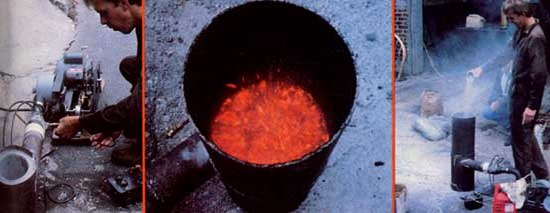

LEFT TO RIGHT: Rocky Golden attaches the blower and warm-up burner to his prototype fluidized bed for a demonstration at MOTHER's Research Center... In less than five minutes the combustion chamber was glowing hot?looking much like the bubbling caldron of a volcanic crater?and prepared to burn almost anything.... Rocky chose low-carbon, high-sulfur coal to fuel his furnace when he fired it up for MOTHER's researchers, and here he's adding limestone as the bed material to prevent the coal's sulfur content from producing a pollutant.